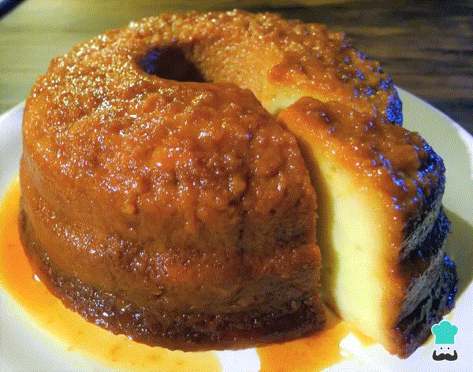

El budín de pan también se conoce como torta de pan o pudin de pan en algunos países del centro y sur de América. Con esta receta tradicional utilizaremos el pan viejo de casa para preparar este rico postre. El budín de pan casero también tiene fama de ser un postre para gente mayor, y es que a los niños no suele gustarles mucho, pero este que aprenderemos a hacer con esta receta fácil te sorprenderá por su sabor dulce y su textura suave. Te maravillará cómo esta torta de pan se vuelve la favorita de tu familia, incluso de los más pequeños. Por otro lado, es fácil de preparar y, sobre todo, económico!

Budín de Pan
Ingredientes necesarios
7 huevos
200grs de azucar (1taza)
800cm cubicos de leche
300grs de pan
1 cucharadita de esencia de vainilla
200grs de azucar para el caramelo
Utensillos
Molde para budin
Cuchara de madera
Bowl
Como hacer el budin de pan
Empieza por hacer el caramelo en un molde metálico colocado directamente sobre el fuego o al baño María. A continuación, debes colocar el azúcar poco a poco y, a medida que se va derritiendo, revolver con una cuchara de madera e ir agregando más azúcar. Deja cocinar hasta que tome color dorado claro. Si el caramelo se hace solo a partir del azúcar lo puedes revolver con tranquilidad, pero si le pones agua no debes tocarlo para evitar que cristalice.
Distribuye el caramelo de forma pareja por todo el molde, base y paredes y deja que se enfríe. La idea es que cubra toda la superficie del molde para que el budín de pan casero quede perfecto.
Mientras se enfría el caramelo, corta el pan en trozos pequeños y remójalos en la mitad de la leche tibia. Este es el paso más importante de la receta de pudin de pan, puesto que se trata del ingrediente principal del budín.
Deja el pan en remojo para que se vaya impregnando de la leche y, aparte, mezcla los huevos con el azúcar y la leche restante. Y, si quieres añadir un sabor extra a la receta de budín de pan que estás preparando, puedes agregar a esta mezcla un poco de ralladura de limón o esencia de vainilla.
Para terminar de hacer la masa del budín, incorpora la mezcla al pan remojado en la leche y revuelve bien.
Coloca la preparación de pan y leche en el molde que has caramelizado anteriormente. Recuerda que para este punto el caramelo ya debe haberse enfriado, de manera que debe estar sólido. Precalienta el horno a 180 ºC para cocinar el budín de pan más rápido.
Hornea el budín de pan a fuego medio, sobre una placa de horno de 2 cm de alto y agrega agua hasta alcanzar la mitad del molde. Deberás hornearlo al baño María durante 1 hora aproximadamente y retirarlo cuando esté listo. El procedimiento es el mismo que para hacer un flan. Si quieres, puedes hacer el baño María al fuego, sin usar el horno.
Deja que se enfríe para retirarlo del molde. Phuedes decorarlo con crema batida, helado de vainilla, chocolate fundido, entre otros.
Procedimiento de elaboración
Origen de la receta
Este postre se creó aproximadamente en el sigo XVII y fue el derivado de otro postre inglés, el cual era conocido como “bread pudding”, donde también se utilizaban restos de pan para realizarlo. Fue creado por las personas inglesas de nivel socioeconómico bajo, que tenían la necesidad de alimentarse. Con el transcurrir de los años se fueron agregando otros ingredientes y se hizo popular por su sencilla preparación, el bajo costo y aprovechamiento de pan que de otra manera tendrían que desechar.
¡¡ Y, ahora que ya sabes cómo hacer budín de pan casero a SERVIR y DISFRUTAR !!